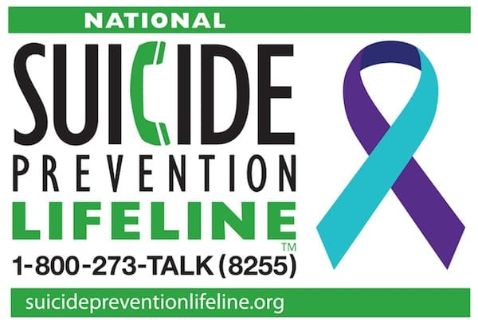

Keep Informed:Stay up-to-date with recommendations from national authorities and follow trusted news channels.
Have a Routine:Try to maintain a daily routine as much as possible such as:
- Wake up and go to sleep at similar times every day
- Maintain personal hygeine
- Consume healthy meals at regular times
- Exercise regularly
- Allocate time for work and time for relaxation each day

Social Contact is Important:Keep in regular contact with friends and family via videochat.
Limit Screen Time:Be aware of how much time you spend in front of a screen each day. Make sure to take regular
breaks from on-screen activities.
Don't be Afraid to Ask for Help:If you do not feel comfortable to a friend or family member about your mental health,
there are numerous mental health professionals who are providing wirtual therapy sessions at this time.